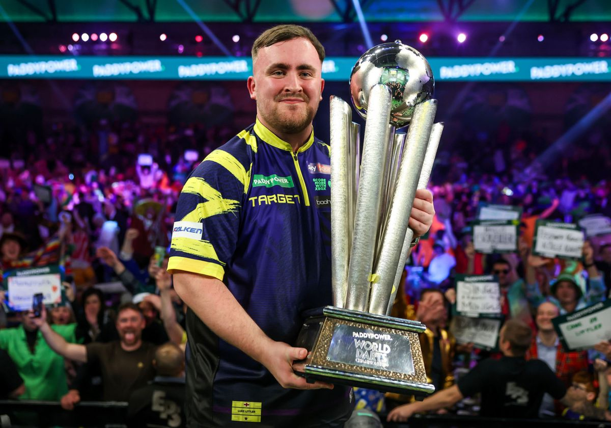

A sportág abszolút csúcseseménye, a legnagyobb presztízsű és összdíjazású torna, amelyet a londoni Alexandra Palace-ban rendeznek meg.
A 2027-es PDC-dartsvilágbajnokságot 2026. dec. 11-től lehet nézni a SportTV-n.
Az év első nagy tornája.
Luke Littler a világ legfiatalabb dartsvilágbajnoka, mindössze 17 éves volt amikor megnyerte a 2025-ös vb-t.
December közepe – Január eleje
London - Alexandra Palace (Anglia)